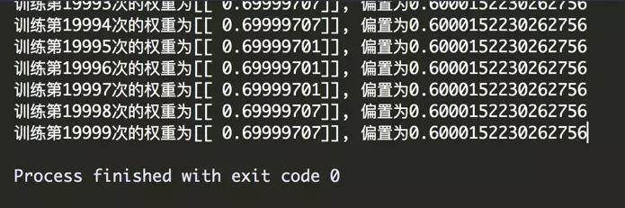
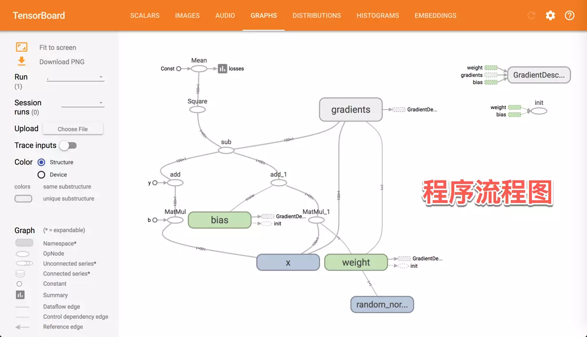
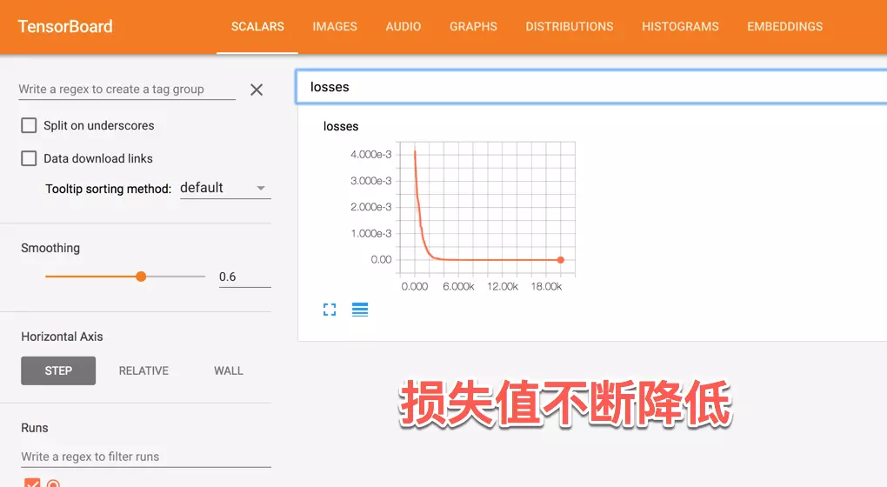
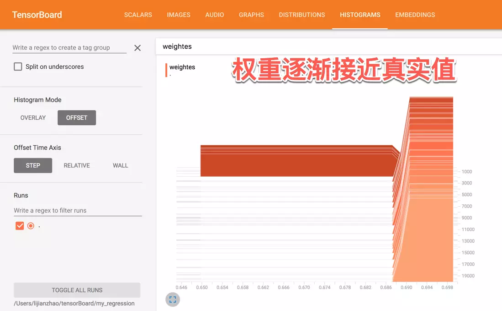
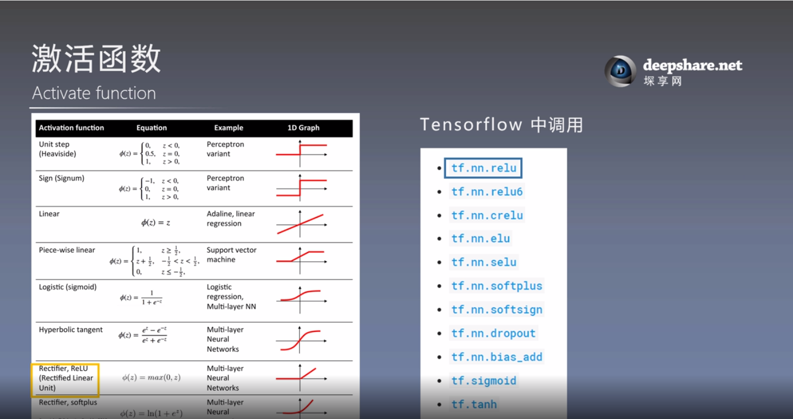
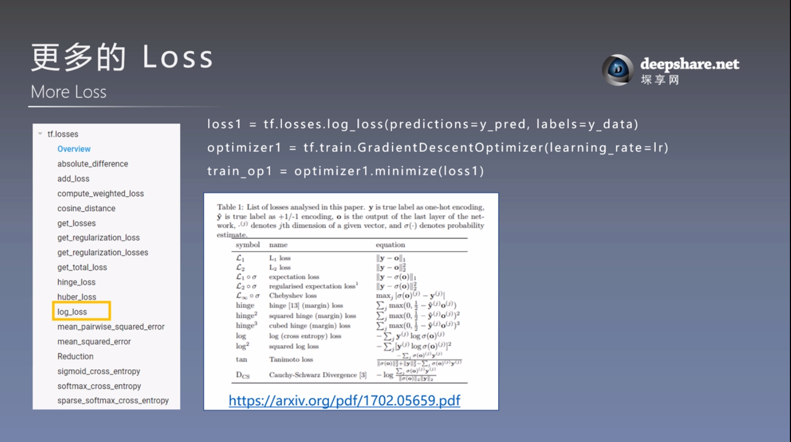
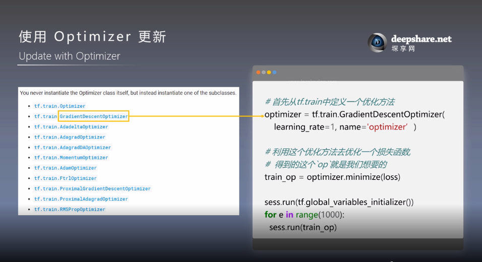

本节以最简单y=0.7x+0.6线性回归为例，将TensorFlow训练、训练后模型保存及可视化串联介绍。
一、相关步骤
- 数据预处理（可选）
- 构建模型
- 定义损失函数及优化方法
- 使用梯度下降迭代训练(可其它优化方法)
- 保存模型
- 画图
1
2
3
4
5
6
7
8
9
10
11
12
13
14
15
16
17
18
19
20
21
22
23
24
25
26
27
28
29
30
31
32
33
34
35
36
37
38
39
40
41
42
43
44
45
46
47
48
49
50
51
52
53
54
55
56
57
58
59
60
61
62
63
64import tensorflow as tf
# 消除警告(使用源码安装可自动消除)
import os
os.environ['TF_CPP_MIN_LOG_LEVEL'] = '2'
# 回归函数
def my_regression():
# 准备数据
with tf.variable_scope("data"):
# 准备100 条数据x的平均值为5.0 标准差为1.0
x = tf.random_normal([100, 1], mean = 5.0, stddev=1.0, name="x")
# 真实的关系为 y = 0.7x + 0.6
y_true = tf.matmul(x, [[0.7]]) + 0.6
# 创建模型
with tf.variable_scope ("model"):
# 创建权重变量
weight = tf.Variable(tf.random_normal([1, 1], mean=1.0, stddev=0.1), name="weight")
# 创建偏置变量,初始值为1
bias = tf.Variable(1.0, name="bias")
# 预测结果
y_predict = tf.matmul(x, weight) + bias
# 计算损失
with tf.variable_scope ("loss"):
# 计算损失
loss = tf.reduce_mean(tf.square(y_predict - y_true))
# 减少损失
with tf.variable_scope("optimizer"):
# 梯度下降减少损失,每次的学习率为0.1
train_op = tf.train.GradientDescentOptimizer(0.01).minimize(loss)
# 收集变量
tf.summary.scalar("losses", loss)
tf.summary.histogram("weightes", weight)
# 合并变量
merged = tf.summary.merge_all()
# 初始化变量
init_op = tf.global_variables_initializer()
# 梯度下降优化损失
with tf.Session() as sess:
sess.run(init_op)
print("初始的权重为{}, 初始的偏置为{}".format(weight.eval(), bias.eval()))
# 添加board记录文件
file_write = tf.summary.FileWriter('/Users/liuyan/tensorBoard/my_regression', graph=sess.graph)
# 循环训练线性回归模型(20000次)
for i in range(20000):
sess.run(train_op)
print("训练第{}次的权重为{}, 偏置为{}".format(i,weight.eval(), bias.eval()))
# 观察每次值的变化
# 运行merge
summery = sess.run(merged)
# 每次收集到的值添加到文件中
file_write.add_summary(summery, i)
if __name__ == '__main__':
my_regression()
二、运行结果
- 
三、模型的保存
模型的保存
1
2saver = tf.train.Saver()
saver.save(sess, "./tmp/ckpt/test")模型恢复
1
save.restore(sess, "./tmp/ckpt/test")
四、可视化
- 
- 
- 
五、扩展
关于损失函数和优化器，有很多种方法，其中也包括很多种激活函数，激活函数加在每一层神经网络后，避免多层网络变成单层。在线性回归基础上使用sigmoid激活函数就变成了逻辑回归(常用于二分类)，使用softmax激活函数就是多分类。
- 常用激活函数
 - 常用损失函数
 - 常用优化器
